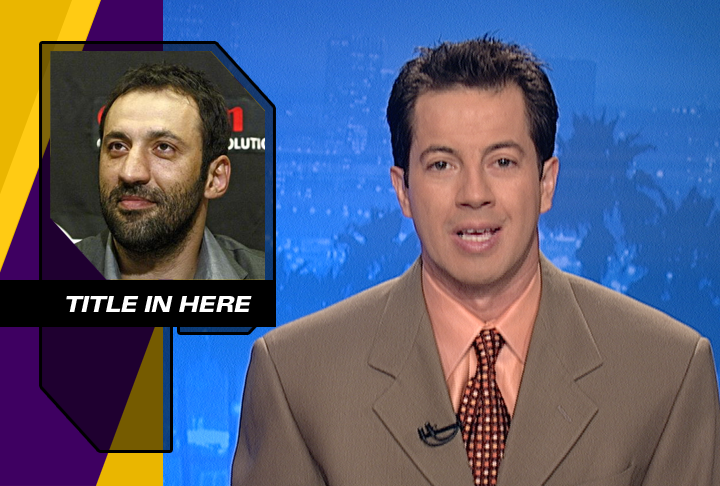
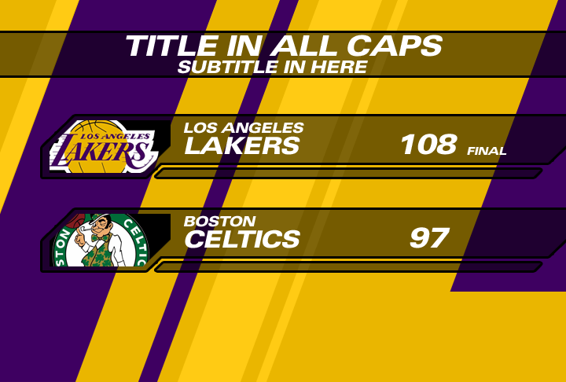
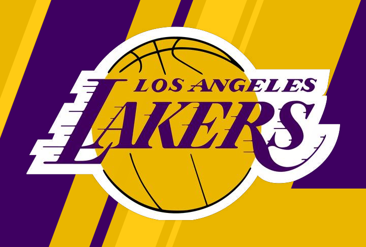
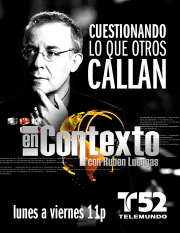

Telemundo / Broadcast / Promotional design
A story on screen.
A system behind it.
On-air graphic layouts and promotional print design from my work at NBC / Universal / Telemundo.
01 / Context & role
Graphics built
around the story.
I produced graphics for nightly newscasts, special assignments, and presentations, including local and national programming. My work also included graphic packages for local shows and collaboration with the marketing team on print and promotional materials.
The selected samples show layout, typography, and consistent visual treatments across different broadcast formats.
02 / On-air package
Different formats.
One visual vocabulary.
A purple-and-gold package uses repeated diagonal shapes, framing, and typography across title, story, and score layouts.



Archived design samples. Placeholder headlines and scores belong to the original layouts. Existing team logos and broadcast imagery are third-party assets, not original logo or photography work by the designer.
03 / Print promotion
From the screen
to a printed message.
A promotional composition for En Contexto combines portrait photography with a strong typographic hierarchy and program branding.
My contribution here is the promotional graphic design and layout.
